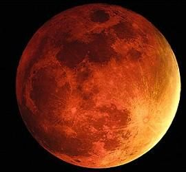

-Marte é o segundo menor planeta do sistema solar, perdendo apenas para Mercúrio.
-O seu tamanho é de 6779km, e seu diâmetro é de 6794km.
-Sua atmosfera é rarefeita e a sua pressão atmosférica varia de 30Pa para 1155Pa. Sua atmosféra também apresenta 95% de dióxido de carbono.
-Sua gravidade é de 3,71m/s^2.
-Sua massa é de 6,39 × 10^23 kg (0,107 M⊕).
-O planeta vermelho também possui duas luas, Fobos e Deimos.
 =======-Marte é o segundo menor planeta do sistema solar, perdendo apenas para Mercúrio.
-O seu tamanho é de 6779km, e seu diâmetro é de 6794km.
-Sua atmosfera é rarefeita e a sua pressão atmosférica varia de 30Pa para 1155Pa. Sua atmosféra também apresenta 95% de dióxido de carbono.
-Sua gravidade é de 3,71m/s^2.
-Sua massa é de 6,39 × 10^23 kg (0,107 M⊕).
-O planeta vermelho também possui duas luas, Fobos e Deimos.
>>>>>>> f85fca0a590e3b143e25ba0bb1081da162eb90a2